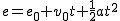

3.3. Buscando solución a los problemas diarios
¿Sirven las ecuaciones en el mundo que nos rodea?
Ya sea consciente o inconscientemente, resolvemos problemas del día a día por medio de ecuaciones: al comparar productos en el mercado, cuando hacemos viajes, en nuestras cuentas bancarias y al buscar una nueva compañía telefónica.

Imagen de AnnaER en Pixabay. Licencia Pixabay
Vamos a ver algunos tipos de problemas que se resuelven con ecuaciones de primer o segundo grado con una incógnita. Evidentemente, no todos los problemas tienen solución ni todos los podemos solucionar con las herramientas que tenemos hasta este momento, pero verás que, con los conocimientos que tienes hasta ahora, se pueden resolver bastantes situaciones.
Caso práctico
Eligiendo una tarifa telefónica
En mi compañía telefónica me ofrecen una tarifa reducida y una tarifa plana para el móvil. Las condiciones de cada una son las siguientes:
| Concepto | Tarifa Reducida | Tarifa Plana |
|
Establecimiento |
15 cént. | 15 cént. |
|
Llamadas a móviles |
3 cént./min. | 19,9€/mes |
|
Llamadas a móviles |
30 cént./min | 18 cént./min |
Mirando las facturas de los últimos meses, he visto que suelo hablar el doble de tiempo con números de móvil de mi compañía que con los de otra. ¿Cuánto tiempo tengo que hablar para que las dos tarifas me salgan por el mismo precio?
Como el establecimiento de llamada es el mismo en las dos tarifas y podemos suponer que haré el mismo número de llamadas con ambas, no vamos a considerar este dato. Ten en cuenta que todos los valores los pasaremos a euros.
Planteamos el problema paso a paso:
a) Si x es el número de minutos que hablo al mes con los móviles de otras compañías, ¿cuánto gastaré al cabo de un mes con la tarifa reducida?
b) ¿Cuánto gastaré con la tarifa plana en las mismas condiciones?
c) ¿Cuántos minutos he de estar hablando para gastar lo mismo con ambas tarifas?
d) Si normalmente hablo menos minutos de lo que me ha dado el resultado anterior, ¿qué tarifa me conviene más?
Comprueba lo aprendido
Comprueba lo aprendido
Comprueba lo aprendido
En Física, el espacio que recorre un cuerpo que se mueve en linea recta sin variar la velocidad, viene dado por la fórmula e = e0 + v·t, donde t es el tiempo, v es la velocidad y e0 es el espacio inicial.
Si en ese movimiento la aceleración permanece constante, entonces tenemos

, donde v0 es la velocidad inicial, a es la aceleración y t el tiempo.En este vídeo puedes ver la resolución de algunas problemas.
Vídeo de Tutomate alojado en Youtube
Para saber más
Para que puedas practicar los conceptos y procedimientos explicados en el tema te proponemos que visites el siguiente enlace.